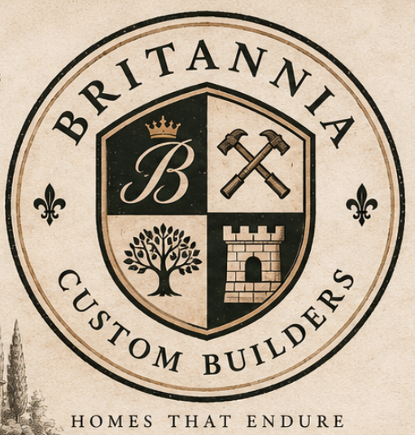

← Brand houseCurrent vector revision
The vector revision on the right is now used throughout the brand website and its SVG downloads. It retains the existing script B and source-derived crossed hammers. The name is typeset Libre Caslon Text, with continuous circular borders. The original remains here for direct comparison.

APPROVED ORIGINAL · RASTER REFERENCE CURRENT WEBSITE ARTWORK · TRUE VECTOR PATHS · UNDER REVIEW
CURRENT WEBSITE ARTWORK · TRUE VECTOR PATHS · UNDER REVIEWThe crown, olive tree and tower differ from the approved original. The current SVG revision is available for review and editing; it is not an exact recovery or an approved fabrication master.
Download outlined SVG · Download editable-text SVG · Download the PNG proof